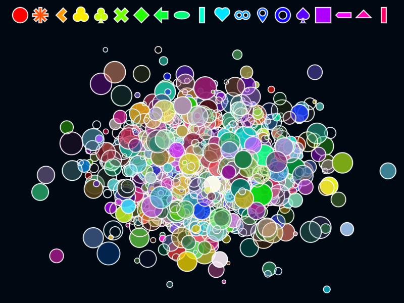
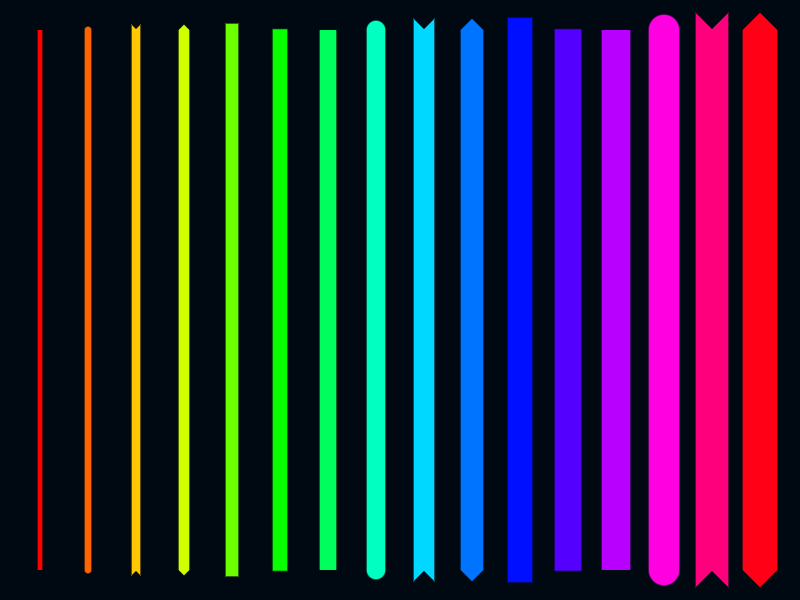
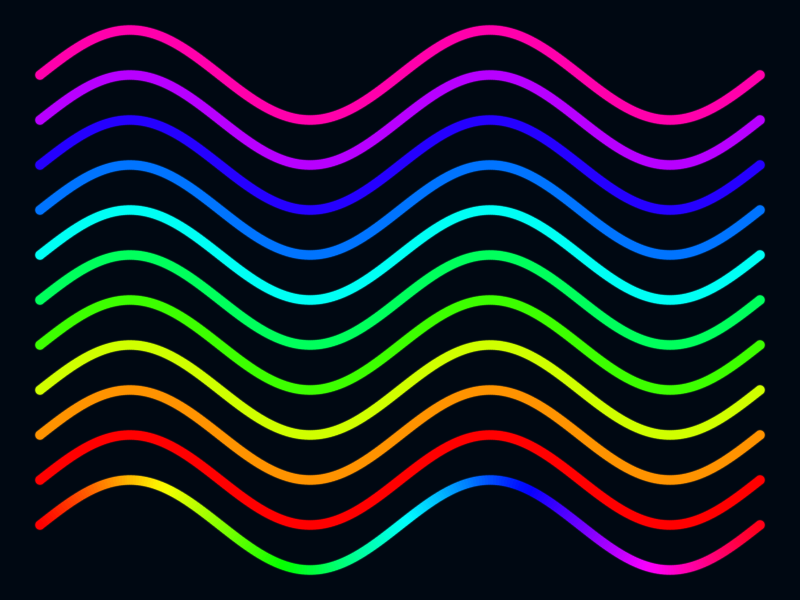
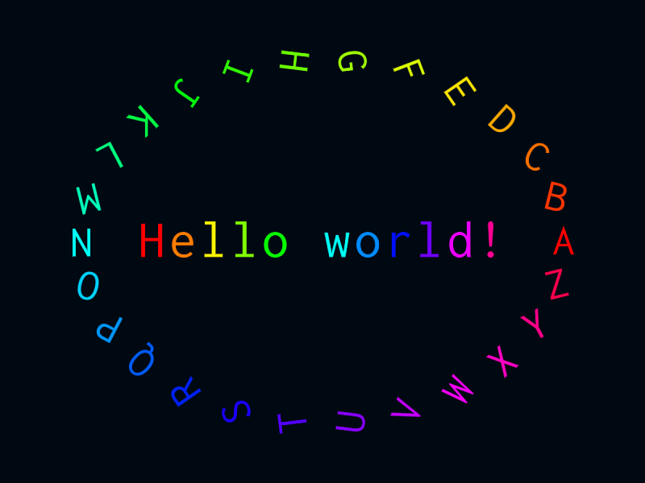
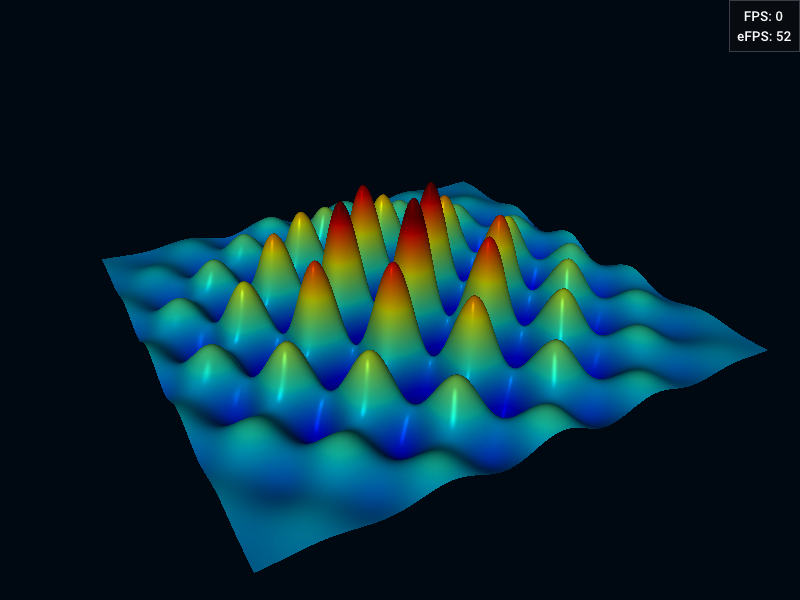
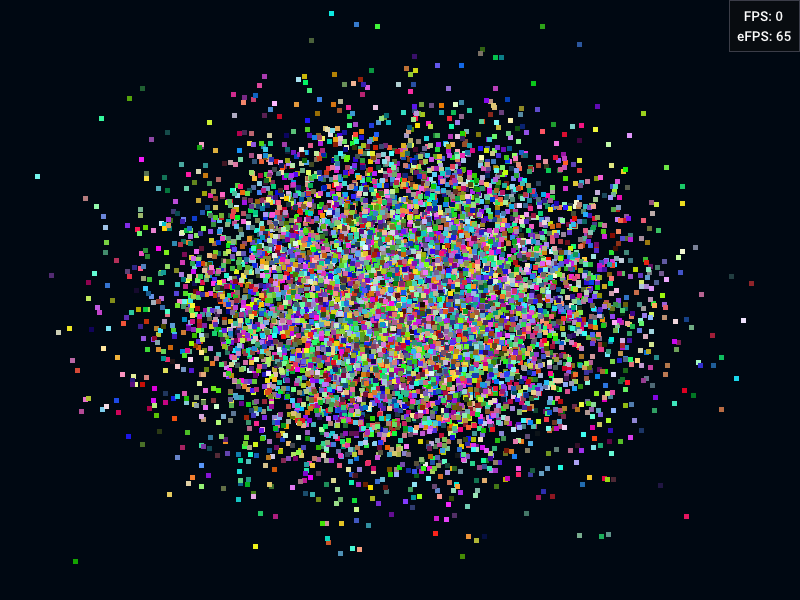
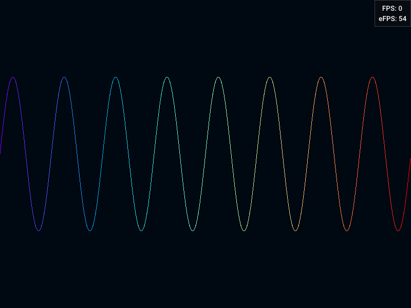
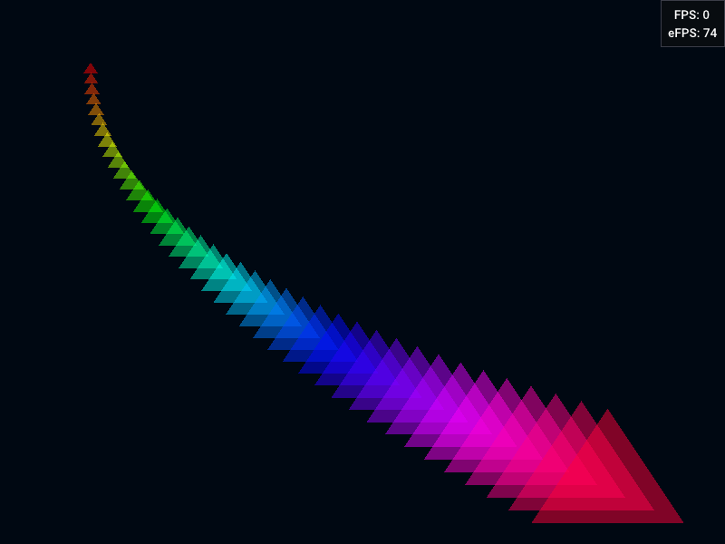
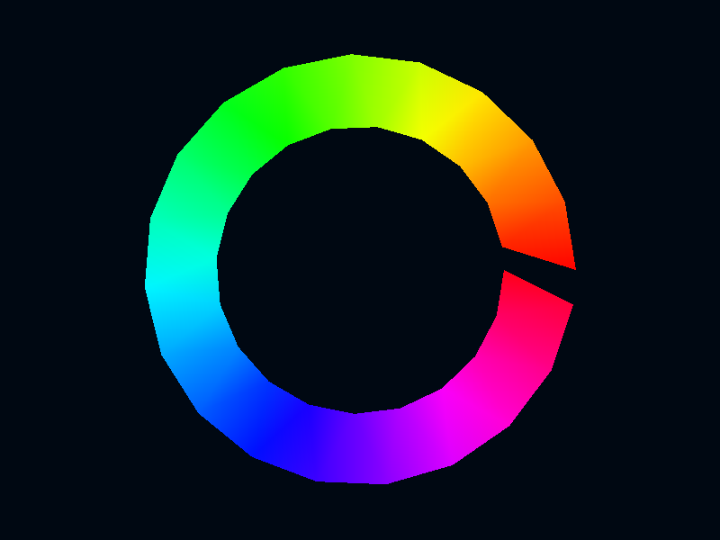
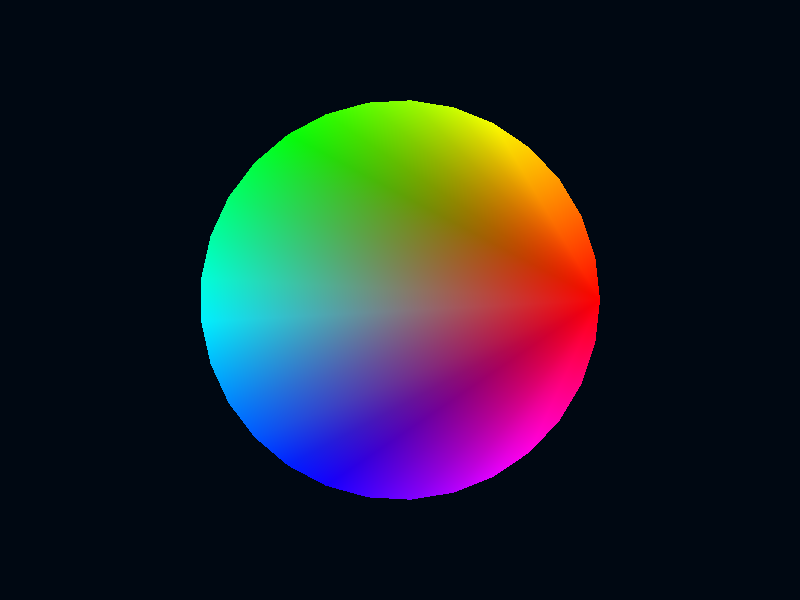

Graphics library¶
This page lists all included graphics. The list is divided into:
- 2D graphics: high-quality antialiased 2D graphical elements,
- 3D graphics: meshes and volumes,
- Basic graphics: basic, low-quality, aliased, but fast basic primitives (points, lines, triangles), useful for demo, testing, and when dealing with tens of millions of points
Note
If not specified, the default vertex structure is DvzVertex:
| Field | Type | Description |
|---|---|---|
pos |
vec3 |
position |
color |
cvec4 |
color RGBA (four bytes) |
2D graphics¶
Marker¶

DvzGraphicsMarkerVertex¶
| Field | Type | Description |
|---|---|---|
{'dtype': 'vec3', 'name': 'pos', 'desc': 'position'} |
vec3 |
position |
{'dtype': 'cvec4', 'name': 'color', 'desc': 'color'} |
cvec4 |
color |
{'dtype': 'float', 'name': 'size', 'desc': 'marker size, in pixels'} |
float |
marker size, in pixels |
{'dtype': 'uint8_t', 'name': 'marker', 'desc': 'marker type enum'} |
uint8_t |
marker type enum |
{'dtype': 'uint8_t', 'name': 'angle', 'desc': 'angle, between 0 (0) included and 256 (M_2PI) excluded'} |
uint8_t |
angle, between 0 (0) included and 256 (M_2PI) excluded |
{'dtype': 'uint8_t', 'name': 'transform', 'desc': 'transform enum'} |
uint8_t |
transform enum |
DvzGraphicsMarkerParams¶
| Field | Type | Description |
|---|---|---|
{'dtype': 'vec4', 'name': 'edge_color', 'desc': 'edge color RGBA'} |
vec4 |
edge color RGBA |
{'dtype': 'float', 'name': 'edge_width', 'desc': 'line width, in pixels'} |
float |
line width, in pixels |
Segment¶

DvzGraphicsSegmentVertex¶
| Field | Type | Description |
|---|---|---|
{'dtype': 'vec3', 'name': 'P0', 'desc': 'start position'} |
vec3 |
start position |
{'dtype': 'vec3', 'name': 'P1', 'desc': 'end position'} |
vec3 |
end position |
{'dtype': 'vec4', 'name': 'shift', 'desc': 'shift of start (xy) and end (zw) positions, in pixels'} |
vec4 |
shift of start (xy) and end (zw) positions, in pixels |
{'dtype': 'cvec4', 'name': 'color', 'desc': 'color'} |
cvec4 |
color |
{'dtype': 'float', 'name': 'linewidth', 'desc': 'line width, in pixels'} |
float |
line width, in pixels |
{'dtype': 'DvzCapType', 'name': 'cap0', 'desc': 'start cap enum'} |
DvzCapType |
start cap enum |
{'dtype': 'DvzCapType', 'name': 'cap1', 'desc': 'end cap enum'} |
DvzCapType |
end cap enum |
{'dtype': 'uint8_t', 'name': 'transform', 'desc': 'transform enum'} |
uint8_t |
transform enum |
Path¶

DvzGraphicsPathVertex¶
| Field | Type | Description |
|---|---|---|
{'dtype': 'vec3', 'name': 'p0', 'desc': 'previous position'} |
vec3 |
previous position |
{'dtype': 'vec3', 'name': 'p1', 'desc': 'current position'} |
vec3 |
current position |
{'dtype': 'vec3', 'name': 'p2', 'desc': 'next position'} |
vec3 |
next position |
{'dtype': 'vec3', 'name': 'p3', 'desc': 'next next position'} |
vec3 |
next next position |
{'dtype': 'cvec4', 'name': 'color', 'desc': 'point color'} |
cvec4 |
point color |
DvzGraphicsPathParams¶
| Field | Type | Description |
|---|---|---|
{'dtype': 'float', 'name': 'linewidth', 'desc': 'line width in pixels'} |
float |
line width in pixels |
{'dtype': 'float', 'name': 'miter_limit', 'desc': 'miter limit for joins'} |
float |
miter limit for joins |
{'dtype': 'int32_t', 'name': 'cap_type', 'desc': 'type of the ends of the path'} |
int32_t |
type of the ends of the path |
{'dtype': 'int32_t', 'name': 'round_join', 'desc': 'whether to use round joins'} |
int32_t |
whether to use round joins |
Text¶

DvzGraphicsTextItem¶
| Field | Type | Description |
|---|---|---|
{'dtype': 'DvzGraphicsTextVertex', 'name': 'vertex', 'desc': 'text vertex'} |
DvzGraphicsTextVertex |
text vertex |
{'dtype': 'cvec4*', 'name': 'glyph_colors', 'desc': 'glyph colors'} |
cvec4* |
glyph colors |
{'dtype': 'float', 'name': 'font_size', 'desc': 'font size'} |
float |
font size |
{'dtype': 'char*', 'name': 'string', 'const': 'const', 'desc': 'text string'} |
const char* |
text string |
DvzGraphicsTextVertex¶
| Field | Type | Description |
|---|---|---|
{'dtype': 'vec3', 'name': 'pos', 'desc': 'position'} |
vec3 |
position |
{'dtype': 'vec2', 'name': 'shift', 'desc': 'shift, in pixels'} |
vec2 |
shift, in pixels |
{'dtype': 'cvec4', 'name': 'color', 'desc': 'color'} |
cvec4 |
color |
{'dtype': 'vec2', 'name': 'glyph_size', 'desc': 'glyph size, in pixels'} |
vec2 |
glyph size, in pixels |
{'dtype': 'vec2', 'name': 'anchor', 'desc': 'character anchor, in normalized coordinates'} |
vec2 |
character anchor, in normalized coordinates |
{'dtype': 'float', 'name': 'angle', 'desc': 'string angle'} |
float |
string angle |
{'dtype': 'usvec4', 'name': 'glyph', 'desc': 'glyph: char code, char index, string length, string index'} |
usvec4 |
glyph: char code, char index, string length, string index |
{'dtype': 'uint8_t', 'name': 'transform', 'desc': 'transform enum'} |
uint8_t |
transform enum |
DvzGraphicsTextParams¶
| Field | Type | Description |
|---|---|---|
{'dtype': 'ivec2', 'name': 'grid_size', 'desc': 'font atlas grid size (rows, columns)'} |
ivec2 |
font atlas grid size (rows, columns) |
{'dtype': 'ivec2', 'name': 'tex_size', 'desc': 'font atlas texture size, in pixels'} |
ivec2 |
font atlas texture size, in pixels |
Image¶
DvzGraphicsImageItem¶
| Field | Type | Description |
|---|---|---|
{'dtype': 'vec3', 'name': 'pos0', 'desc': 'top left corner'} |
vec3 |
top left corner |
{'dtype': 'vec3', 'name': 'pos1', 'desc': 'top right corner'} |
vec3 |
top right corner |
{'dtype': 'vec3', 'name': 'pos2', 'desc': 'bottom right corner'} |
vec3 |
bottom right corner |
{'dtype': 'vec3', 'name': 'pos3', 'desc': 'bottom left corner'} |
vec3 |
bottom left corner |
{'dtype': 'vec2', 'name': 'uv0', 'desc': 'tex coords of the top left corner'} |
vec2 |
tex coords of the top left corner |
{'dtype': 'vec2', 'name': 'uv1', 'desc': 'tex coords of the top right corner'} |
vec2 |
tex coords of the top right corner |
{'dtype': 'vec2', 'name': 'uv2', 'desc': 'tex coords of the bottom right corner'} |
vec2 |
tex coords of the bottom right corner |
{'dtype': 'vec2', 'name': 'uv3', 'desc': 'tex coords of the bottom left corner'} |
vec2 |
tex coords of the bottom left corner |
DvzGraphicsImageVertex¶
| Field | Type | Description |
|---|---|---|
{'dtype': 'vec3', 'name': 'pos', 'desc': 'position'} |
vec3 |
position |
{'dtype': 'vec2', 'name': 'uv', 'desc': 'tex coordinates'} |
vec2 |
tex coordinates |
DvzGraphicsImageParams¶
| Field | Type | Description |
|---|---|---|
{'dtype': 'vec4', 'name': 'tex_coefs', 'desc': 'blending coefficients for the four images'} |
vec4 |
blending coefficients for the four images |
3D graphics¶
Mesh¶

DvzGraphicsMeshVertex¶
| Field | Type | Description |
|---|---|---|
{'dtype': 'vec4', 'name': 'pos', 'desc': 'position'} |
vec4 |
position |
{'dtype': 'vec4', 'name': 'normal', 'desc': 'normal vector'} |
vec4 |
normal vector |
{'dtype': 'vec2', 'name': 'uv', 'desc': 'tex coords'} |
vec2 |
tex coords |
{'dtype': 'uint8_t', 'name': 'alpha', 'desc': 'transparency value'} |
uint8_t |
transparency value |
DvzGraphicsMeshParams¶
| Field | Type | Description |
|---|---|---|
{'dtype': 'mat4', 'name': 'lights_pos_0', 'desc': 'positions of each of the maximum four lights'} |
mat4 |
positions of each of the maximum four lights |
{'dtype': 'mat4', 'name': 'lights_params_0', 'desc': 'ambient, diffuse, specular coefs for each light'} |
mat4 |
ambient, diffuse, specular coefs for each light |
{'dtype': 'vec4', 'name': 'tex_coefs', 'desc': 'blending coefficients for the four textures'} |
vec4 |
blending coefficients for the four textures |
{'dtype': 'vec4', 'name': 'clip_coefs', 'desc': 'clip coefficients'} |
vec4 |
clip coefficients |
The mesh graphics supports the following features:
- Phong shading
- Up to four textures
- Customizable texture blending coefficients
- Transparency (but does not play well with depth test)
- Support for arbitrary RGB values (via cvec3 packing into vec2)
- Customizable plane clipping
Plane clipping: when the clip vector is non-zero, the fragment shader implements the following test. If the dot product of the clip vector with the vertex position (in scene coordinates) is negative, the fragment is discarded. This feature allows to cut the mesh along any arbitrary affine plane.
Basic graphics¶
Points¶

DvzGraphicsPointParams¶
| Field | Type | Description |
|---|---|---|
{'dtype': 'float', 'name': 'point_size', 'desc': 'point size, in pixels'} |
float |
point size, in pixels |
Lines¶

Line strip¶

Triangles¶

Triangle strip¶

Triangle fan¶

Warning
Triangle fan graphics is not supported on macOS and should therefore be avoided if macOS compatibility is desirable.